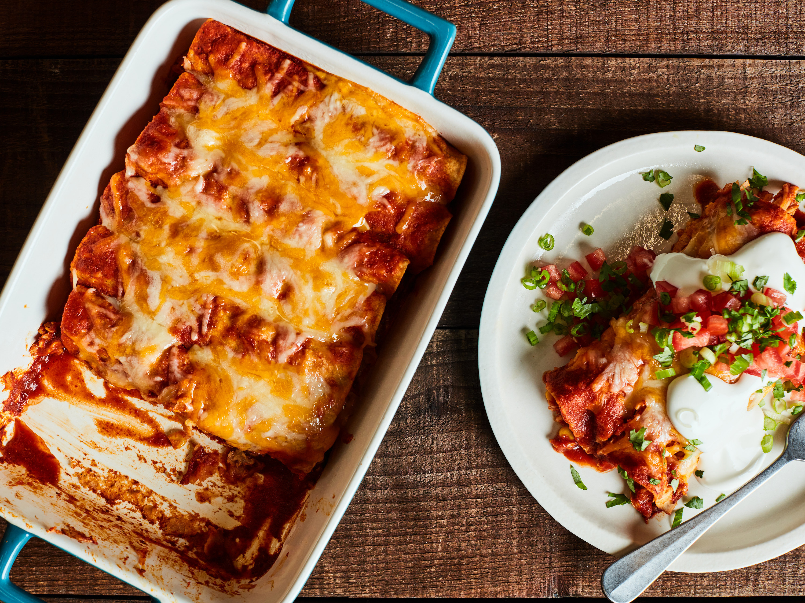

Beef Enchiladas with Spicy Red Sauce

Description
Ground beef enchiladas in flour tortillas topped with spicy red sauce, cheese and fresh cilantro.
Ingredients
- 1 tablespoon olive oil
- 1/2 cup finely chopped onion
- 4 teaspoons minced garlic
- 1 teaspoon dried oregano
- 3 1/2 teaspoons chili powder
- 1 teaspoon dried basil
- 1/4 teaspoon salt
- 1/4 teaspoon ground black pepper
- 1 teaspoon ground cumin
- 1 teaspoon dried cilantro
- 1/2 cup prepared salsa
- 1 (6 ounce) can tomato paste
- 1 (6 ounce) can tomato sauce
- 2 cups chicken broth
- 1 pound ground beef
- 3/4 cup finely chopped onion
- 1 tablespoon minced garlic
- 1/2 teaspoon chili powder
- 1/2 teaspoon ground cumin
- 1/2 cup prepared red enchilada sauce
- 1/2 cup beef broth
- 1/2 cup shredded Mexican-style cheese blend
- cooking spray
- 8 (6 inch) flour tortillas
- 2 cups shredded Mexican-style cheese blend
- 1/2 cup chopped fresh cilantro
Steps
- To make the spicy red sauce, heat the olive oil in a large saucepan over medium heat, and cook and stir 1/2 cup of onion until the onion is softened, 3 to 4 minutes. Stir in 4 teaspoons of garlic, and cook and stir until fragrant, another 3 to 5 minutes, watching carefully to avoid burning the garlic. Stir in the oregano, 3 1/2 teaspoons of chili powder, basil, salt and black pepper, 1 teaspoon of cumin, the dried cilantro, salsa, tomato sauce, tomato paste, and chicken broth until the sauce is smoothly combined.
- Bring the sauce to a simmer, reduce heat to low, and simmer about 30 minutes, stirring often, until the flavors have blended and the sauce has thickened slightly.
- While spicy red sauce is simmering, cook and stir the ground beef in a large skillet over medium-high heat until the meat is evenly browned. Break the meat up into crumbles as it cooks, and drain off excess grease. Mix in 3/4 cup of onion, 1 tablespoon of garlic, 1/2 teaspoon of chili powder, and 1/2 teaspoon of cumin into the meat, and cook and stir until the onions are softened and the meat mixture is fragrant with spices, 5 to 10 more minutes. Stir in the enchilada sauce and beef broth; simmer for 5 more minutes. Stir in 1/2 cup of Mexican cheese blend, and allow the cheese to melt into the meat sauce. Reduce heat to low, and simmer the meat sauce for 30 more minutes to thicken.
- Preheat oven to 350 degrees F (175 degrees C). Spray a 9x13-inch baking dish with cooking spray.
- Spray both sides of each tortilla with cooking spray, stack up the tortillas with a piece of aluminum foil between each tortilla, and wrap the stack with aluminum foil. Place the tortillas into the preheated oven to warm, about 10 minutes.
- Spread about 1/2 cup of the spicy red sauce over the bottom of the prepared baking dish. Fill each tortilla with the meat sauce, reserving about 1/2 cup of the meat sauce; roll the tortillas into enchiladas, and arrange in the baking dish, seam sides down. Pour the remaining spicy red sauce over the enchiladas. Sprinkle with the reserved 1/2 cup of meat mixture, and top with remaining 2 cups of Mexican cheese blend.
- Bake until the cheese topping is golden brown and the sauce is bubbly, about 30 minutes. Remove from oven and sprinkle with cilantro to serve.